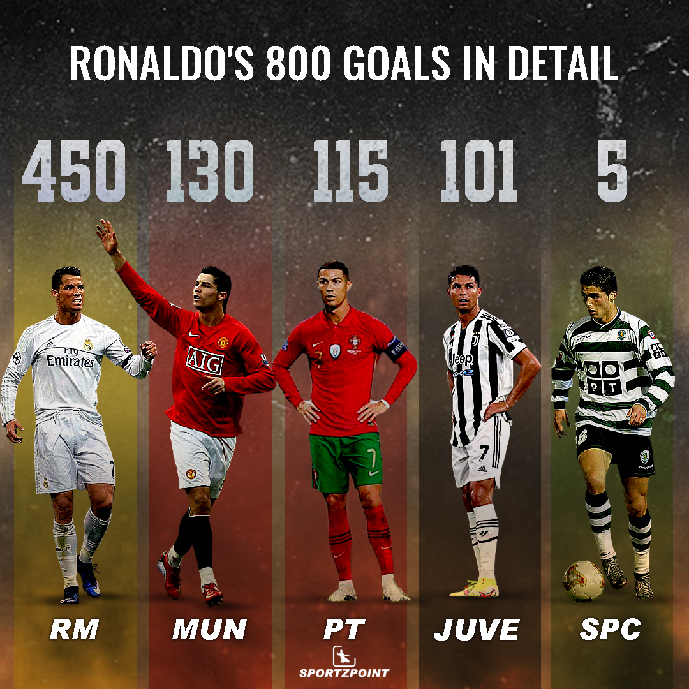

Ronaldo dos Santos Aveiro GOIH ComM (Portuguese pronunciation: [kɾiʃˈtjɐnu ʁɔˈnaɫdu]; born 5 February 1985) is a Portuguese professional footballer who plays as a forward for and captains both Saudi Professional League club Al Nassr and the Portugal national team. Widely regarded as one of the greatest players of all time, Ronaldo has won five Ballon d'Or awards[note 3] and four European Golden Shoes, the most by a European player. He has won 34 trophies in his career, including seven league titles, five UEFA Champions Leagues, the UEFA European Championship and the UEFA Nations League. Ronaldo holds the records for most appearances (183), goals (140), and assists (42) in the Champions League, goals in the European Championship (14), international goals (118), and joint-most international appearances (196). He is one of the few players to have made over 1,100 professional career appearances, and has scored over 800 official senior career goals for club and country.
Ronaldo began his senior career with Sporting CP, before signing with Manchester United in 2003, winning the FA Cup in his first season. He would also go on to win three consecutive Premier League titles, the Champions League and the FIFA Club World Cup; at age 23, he won his first Ballon d'Or. Ronaldo was the subject of the then-most expensive association football transfer when he signed for Real Madrid in 2009 in a transfer worth €94 million (£80 million). He became a key contributor and formed an attacking trio with Karim Benzema and Gareth Bale which was integral to the team winning four Champions League wins from 2014 to 2018, including La Décima. During this period, he won back-to-back Ballons d'Or in 2013 and 2014, and again in 2016 and 2017, and was runner-up three times behind Lionel Messi, his perceived career rival. He also became the club's all-time top goalscorer and the all-time top scorer in the Champions League, and finished as the competition's top scorer for six consecutive seasons between 2012 and 2018. With Real, Ronaldo won two La Ligatitles, two Copa del Rey, four Champions Leagues, three UEFA Super Cup and three Club World Cups. In 2018, he signed for Juventus in a transfer worth an initial €100 million (£88 million), the most expensive transfer for an Italian club and for a player over 30 years old. He won two Serie A titles, two Supercoppa Italiana trophies and a Coppa Italia, became the inaugural Serie A Most Valuable Player and the first footballer to finish as top scorer in the English, Spanish and Italian leagues, before returning to Manchester United in 2021. He left in 2022, after his contract with the club was terminated. In 2023, Ronaldo signed for Al Nassr.
Ronaldo is reported to have a net worth of around $500 million (£363m), but no one can really claim to have a
bulletproof idea of what Ronaldo is worth except his management company.
The estimated net worth of Ronaldo is slightly higher than that of his long-time rival Lionel Messi, though the
Argentine has won more lucrative contracts in recent years. The lucrative move to Saudi Arabia should go some way
towards ensuring Ronaldo remains out in front.
Ronaldo was ranked third on Forbes' 2022 list of the highest paid athletes in the world, with earnings of $115
million (£93m), which was a reduction in $5m on the previous year.
On that occasion, the Portugal captain was behind Messi, who topped the list, and NBA icon LeBron James, who was
second. He was ahead of Neymar, Steph Curry, Kevin Durant and Roger Federer among others. Ronaldo's most significant
sponsorship deal is with Nike, which was renewed around the same time he extended his last Madrid contract.
The agreement with Nike is said to be the second lifetime contract the sportswear giant has handed out after it
offered similar terms to three-time NBA champion LeBron James. The Los Angeles Lakers icon's deal has been
speculated to be worth in excess of $1 billion in total, though exactly how that breaks down year-by-year is kept
under wraps.
Naturally, many have assumed that Ronaldo has signed on a comparable basis. Though the $1bn figure seems
extraordinary, it is worth noting that sponsorship analysts Hookit estimated that Ronaldo's social-media presence
alone was worth an incredible $474m to Nike in 2016.
Beyond Nike, Ronaldo has had endorsement deals with the likes of Armani, Tag Heuer, Egyptian Steel, Herbalife,
Italia Independent, Clear, PokerStars and Castrol.
Cristiano Ronaldo dos Santos Aveiro was born on 5 February 1985 in the São Pedro parish of Funchal, the capital of the Portuguese island of Madeira, and grew up in the nearby parish of Santo António.[8][9] He is the fourth and youngest child of Maria Dolores dos Santos Viveiros da Aveiro, a cook, and José Dinis Aveiro, a municipal gardener and part-time kit man.[10] His great-grandmother on his father's side, Isabel da Piedade, was from the island of São Vicente, Cape Verde.[11] He has one older brother, Hugo, and two older sisters, Elma and Liliana Cátia "Katia".[12] His mother revealed that she wanted to abort him due to poverty, his father's alcoholism, and having too many children already, but her doctor refused to perform the procedure.[13][14] Ronaldo grew up in an impoverished Catholic Christian home, sharing a room with all his siblings.[15] As a child, Ronaldo played for Andorinha from 1992 to 1995,[16] where his father was the kit man,[10] and later spent two years with Nacional. In 1997, aged 12, he went on a three-day trial with Sporting CP, who signed him for a fee of £1,500.[17] He subsequently moved from Madeira to Alcochete, near Lisbon, to join Sporting's youth academy.[17] By age 14, Ronaldo believed he had the ability to play semi-professionally and agreed with his mother to cease his education to focus entirely on football.[18] With a troubled life as a student[19] and living in Lisbon area away from his Madeiran family, he didn't complete schooling beyond the 6th grade.[20][21] While popular with other students at school, he had been expelled after throwing a chair at his teacher, who he said had "disrespected" him.[18] One year later, he was diagnosed with tachycardia, a condition that could have forced him to give up playing football.[22] Ronaldo underwent heart surgery where a laser was used to cauterise multiple cardiac pathways into one, altering his resting heart rate.[23] He was discharged from the hospital hours after the procedure and resumed training a few days later.[24]
The signature
| TEAMS | APPERANCES | GOALS | ASSISTS | ||
|---|---|---|---|---|---|
| Red cards | Yellow card | Games | |||
| Sporting CF | 0 | 0 | 61 | 5 | 4 |
| Man Utd | 0 | 12 | 321 | 135 | 57 |
| Real Madrid CF | 2 | 21 | 663 | 450 | 119 |
| Juventus | 1 | 13 | 156 | 101 | 19 |
| Al-Nassr | 0 | 0 | 4 | 5 | 2 |
| TOTAL | |||||
| 5 | 3 | 45 | 1201 | 696 | 201 |